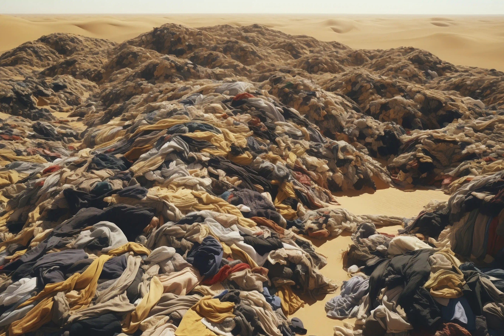

El vertedero de Alto Hospicio, con una extensión estimada de 300 hectáreas, recibe cada año alrededor de 39.000 toneladas de ropa desechada. La acumulación, impulsada por la moda rápida, ha convertido el lugar en un enorme basural textil, conocido como “la gran mancha de basura de la moda”. Estos desechos se extienden hasta donde alcanza la vista en las afueras de Alto Hospicio, una ciudad de 130.000 habitantes que enfrenta graves impactos ambientales, sociales y económicos derivados de esta situación

Impactos Ambientales: Contaminación del suelo, contaminación del agua, degradación del ecosistema y contaminación del aire.
Impactos Sociales: Riesgos para la salud, desigualdad social y
conflictos
sociales.
Impactos en la economía local: La contaminación afecta a la industria turística, a la agricultura y a la pesca en la región
Nuestro objetivo es implementar, en la cercanía de los vertederos de Alto Hospicio, un Centro de Reciclaje que inicie con el tratamiento de textiles y, en una segunda etapa, pueda incorporar otros tipos de reciclaje o gestión de residuos según las necesidades específicas del territorio.
Este Centro de Reciclaje se concibe como un centro urbano abierto a la comunidad local y a profesionales, que integra: gestión de residuos, educación, investigación y desarrollo económico en un espacio autosustentable. Se plantea como un ecosistema donde el reciclaje no es solo una forma de desechar, sino el motor de una economía circular.
Su propósito es transformar los residuos en recursos valiosos, impulsar la innovación y generar empleo, todo con un enfoque firme en sostenibilidad y eficiencia.
Los textiles en buen estado serán lavados y restaurados para comercialización directa. El reciclaje mecánico tratará los textiles para obtener materia prima para generar otros productos textiles y no textiles.
Proceso que permite obtener fibras poliméricas recicladas, aptas para la fabricación de productos textiles con calidad equivalente a la de materiales nuevos.
Tratamiento de textiles y otros residuos mediante pirólisis (descomposición térmica sin oxígeno) para generar energéticos y subproductos como carbón activo e hidrógeno, con un impacto ambiental controlado.
El proyecto propone eliminar definitivamente el vertedero textil (y de otros residuos) y posicionar a Alto Hospicio como referente mundial en regeneración territorial. Se generan impactos ambientales, sociales, económicos y culturales, fortaleciendo la resiliencia del territorio y articulando una transformación profunda a nivel regional. Esto va apalancando un desarrollo económico que genere un espiral virtuoso de economía circular que será un ejemplo para el país y para el mundo.
Consultor y Coach Socioambiental
Ver CV
Planificación Estratégica y Regeneración Sistémica
Ver CV
Arquitecto y Especialista en Diseño Sostenible
Ver CVConsultor Senior en Medio Ambiente y Estrategia ESG
Ver CV
Director Creativo en Publicidad y Comunicación
Ver CVGestión, Coordinación y Producción Ejecutiva
Ver CVConsultor y Coach Socioambiental
35 años de experiencia en educación ambiental, sostenibilidad y sistemas regenerativos.
"Comprendo los territorios y comunidades de Chile a través de diversos proyectos en 8 países y 2 continentes —desde la academia hasta la resolución de conflictos en zonas mineras."
Coordinador técnico | Líder en práctica socioambiental | Estratega en comunicación con actores clave
Planificación Estratégica | Unidades productivas inclusivas | Regeneración sistémica
"Con experiencia en sostenibilidad y sistemas comunitarios regenerativos, aporto soluciones holísticas a desafíos como la rehabilitación del vertedero textil de Atacama. Mi trabajo combina diseño textil circular con procesos participativos y articulación con actores globales."
Coordinadora técnica | Asesora en economía regenerativa | Liderazgo comunitario
Arquitecto chileno-francés | DPLG (Diploma de Estado)
Especialista en planificación urbana, restauración patrimonial, vivienda social, retail y diseño sostenible.
Consultor Senior en Medio Ambiente y Sustentabilidad
Más de 15 años de experiencia internacional en estrategias corporativas de sostenibilidad, evaluación ambiental y social de proyectos, gestión del cambio climático, biodiversidad, agua y residuos. Ha trabajado en sectores como minería, energía, materiales de construcción, agricultura y cosmética de lujo, en Chile, Suiza y otros países de Europa y Latinoamérica.
Asesor en sostenibilidad | Estratega ESG | Vinculación con comunidades y stakeholders internacionales.
Director Creativo en Publicidad y Comunicación
Profesional con más de 15 años de experiencia liderando proyectos de comunicación, branding y campañas para marcas nacionales e internacionales.
Director creativo | Responsable de publicidad, branding y comunicación para posicionar la imagen de Recicla Atacama en medios y redes sociales.
Gestión y Coordinación de Proyectos | Productora Ejecutiva Audiovisual
Especializada en gestión, coordinación y sistematización de procesos complejos en cine, televisión y proyectos culturales.
Coordinación general | Gestión de equipos | Sistematización de procesos en Recicla Atacama.
El trabajo de limpieza del desierto se inspira en un pequeño gran aliado de la naturaleza: el Escarabajo Estercolero. Este insecto cumple un rol esencial en el ecosistema: recoge desechos, los transforma en nutrientes y contribuye a mantener el equilibrio natural.Gracias a su labor, se reciclan nutrientes, se controlan plagas, se airea el suelo, se dispersan semillas y se preserva la salud del ecosistema.Por eso, el Escarabajo Estercolero es el protagonista de nuestra misión. Lo verás en nuestras redes sociales, medios de comunicación y merchandising.Será nuestro vocero y símbolo de liderazgo, pero sobre todo, la inspiración que nos impulsa a cumplir un gran objetivo: limpiar y regenerar el Desierto de Atacama.
El trabajo de limpieza del desierto nos inspiró en un insecto que realiza una labor muy similar: el Escarabajo Estercolero. Su rol en el ecosistema es esencial, ya que recolecta los desechos, forma con ellos una bola y la entierra. Este proceso aporta múltiples beneficios: recicla nutrientes, controla plagas, airea el suelo, dispersa semillas y actúa como bioindicador de la salud del ecosistema. Por todo esto, el Escarabajo Estercolero será el protagonista de nuestra comunicación. Lo veremos en televisión, redes sociales, radio y en todo nuestro merchandising. Será nuestro vocero y líder, pero sobre todo, el símbolo que nos inspira y empuja a cumplir esta gran tarea: limpiar y regenerar el Desierto de Atacama.
Queremos conocer tus ideas y sumarte a esta misión. Hay distintas formas de ayudar: trabajando con nosotros en alguna de nuestras áreas, colaborando presencialmente en el Desierto o siendo embajador/a del proyecto en redes sociales.

+56 9 xxx-xxx-xx
Francisco Bilbao 2826, Providencia, Santiago
proyectoregeneraatacama@website.com